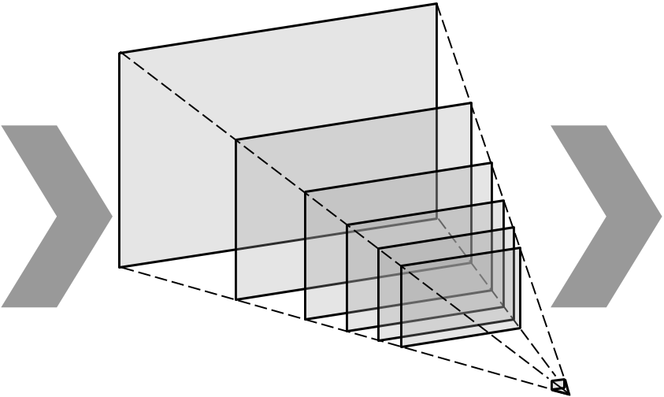
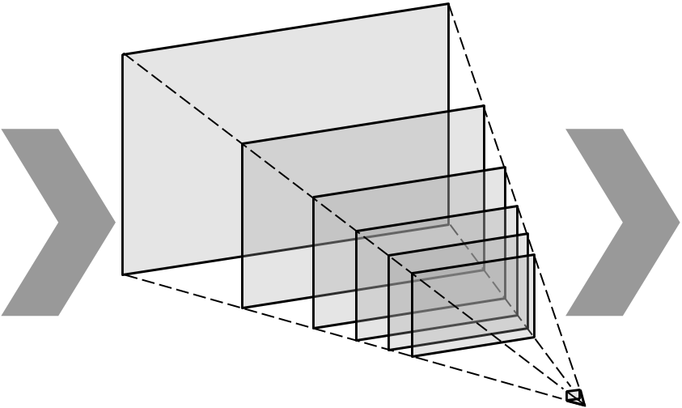

Single image inputMultiplane imageNovel rendered views
A recent strand of work in view synthesis uses deep learning to generate multiplane images—a camera-centric, layered 3D representation—given two or more input images at known viewpoints. We apply this representation to single-view view synthesis, a problem which is more challenging but has potentially much wider application. Our method learns to produce a multiplane image directly from a single image input, predicting shape and disoccluded content in a single step, and we introduce scale-invariant view synthesis for supervision, enabling us to train on online video. We show this approach is applicable to several different datasets, that it additionally generates reasonable depth maps, and that it learns to fill in content behind the edges of foreground objects in background layers.